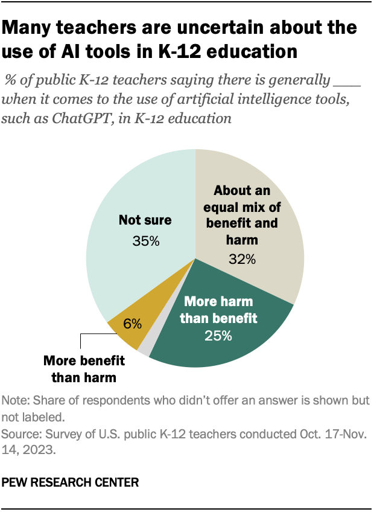
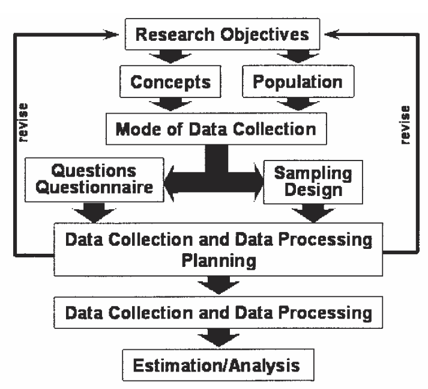

Does the government use the number of people collecting unemployment insurance (UI) benefits under state or federal government programs?
Does the government count every unemployed person each month?
It is based on a survey with 60,000 eligible households and conducted every month
From this survey, the unemployment rate was used to represent the national unemployment rate
Another example: Attitude toward AI
A quarter of public K-12 teachers say using AI tools in K-12 education does more harm than good.
Source: pewresearch.org/
When it comes to the use of artificial intelligence tools, such as ChatGPT, in K-12 education, do you think there is generally ____
More benefit than harm
More harm than benefit
About an equal mix of benefit and harm
Not sure
No answer

Another example: Attitude toward AI
They surveyed 2,531 U.S. public K-12 teachers from Oct. 17 to Nov. 14, 2023. The teachers are members of RAND’s American Teacher Panel, a nationally representative panel of public school K-12 teachers recruited through MDR Education.
Definition of survey
Based on Merriam-Webster, survey is:
(v.) to query (someone) in order to collect data for the analysis of some aspect of a group or area
(n.) the act or an instance of surveying
Example questions answered by surveys
What are people’s employment status, occupation, and industry?
How satisfied are customers with a product?
What are people’s political affiliations and voting intentions?
How often do people engage in certain activities?
How much do people know about a particular topic?
What are people’s views on a particular policy?
What are their preferences for products, services, or features?
Definition of survey
A survey is a “systematic method for gathering information from (a sample of) entities for the purposes of constructing quantitative descriptors of the attributes of the larger population of which the entities are members” (Groves, et al., 2009)
Some researchers use survey and questionnaire interchangeably.
Defining features of survey (Dalenius, 1985)
A survey concerns a set of objects comprising a population.
Populations concerns a finite set of objects such as individuals, businesses, or farms.
The population of interest (referred to as the target population) must always be specified.
Defining features of survey (Dalenius, 1985)
The population under study has one or more measurable properties.
A person’s occupation at a specific time
A person’s employment status
A person’s attitude or opinion
A person’s health condition
Defining features of survey (Dalenius, 1985)
Goal of the survey is to describe the population by one or more parameters defined in terms of the measurable properties.
Examples of parameters are
the proportion of unemployed persons in a population at a given time
the total revenue of businesses in a specific industry sector during a given period, and
the number of wildlife species in an area at a given time.
Defining features of survey (Dalenius, 1985)
To get observational access to the population, a frame is needed
The frame population (also called sampling frame) is the set of persons for whom some enumeration can be made prior to the selection of the survey sample
It is an operational representation of the population units, such as a list of all objects in the population under study or a map of a geographical area
Defining features of survey (Dalenius, 1985)
A sample of objects is selected from the frame in accordance with a sampling design that specifies a probability mechanism and a sample size.
Every sampling design must specify selection probabilities and a sample size.
If selection probabilities are not known, the design is not statistically valid.
Defining features of survey (Dalenius, 1985)
Observations are made on the sample in accordance with a measurement process
Observations are collected by a mechanism referred to as the data collection mode.
Data collection can be administered in many different ways.
The observations can be made by means of
some mechanical device (e.g., electronic monitors or meters that record TV viewing behavior),
direct observation (e.g., counting the number of wildlife species on aerial photos), or
a questionnaire (observing facts and behaviors via questions that reflect conceptualizations of research objectives)
Defining features of survey (Dalenius, 1985)
Based on the measurements, an estimation process is applied to compute estimates of the parameters when making inference from the sample to the population.
The observations generate data.
The error in the estimates due to the fact that a sample has been observed instead of the entire population can be calculated
Survey process (Biemer & Lyberg, 2003)
Determining the Research Objectives
The primary estimates that will be produced from the survey results or the key data analyses that are to be conducted using the survey data
Examples include
the proportion of students from underrepresented groups at UMN
The satisfaction of students about online instruction at UMN
Determining what are to be measured
Concepts or constructs
Manifest variables
Age
Income
GPA
Latent variables
Satisfaction
Attitude
Preference
Latent variables may need to be measured with indicators
Defining the Target Population
The target population is the group of persons or other units for whom the study results will apply.
It is also about which inferences will be made from the survey results.
Examples include
All incoming undergraduates at UMN in 2024 fall
persons living in the United States who are aged 65 years or older and are enrolled in the Medicare system
Determining the Mode of Administration
The mode of administration can vary
Mail questionnaires
Internet (such as Qualtrics)
Telephone
Face-to-face
Multiple modes
These decisions must be made before designing the questionnaire, since different modes of data collection often require very different types of questionnaires.
The mode of administration will also constrain the sampling design choices that can be used for the survey.

Developing the Questionnaire
Questionnaires consist of questions or items for measurement
Principles of measurement apply
Reliability
Validity
Fairness
Question development may be affected by the mode of administration
Response time collection for internet survey
Sampling Design
sampling frame (i.e., the list of population members)
methods used for randomly selecting the sample from the frame
sample sizes
Developing Data Collection and Data Processing Plans
specifying the process of fielding the survey
collecting the data,
converting the data to computer-readable format,
editing the data both manually and by computer
Collecting and Processing the Data
Recruiting interviewer
Mailing questionnaires
Monitoring return rates
Training the telephone interviewers
Cleaning data
Estimation and Data Analysis
Data weighting
Handling missing responses
Conducting statistical analysis and reporting findings
Classifications of Survey (Stoop, Harrison, 2012)
Who: The Target Population
What: The Topic
By Whom: Survey Agency and Sponsor
How: Survey Mode
When: Cross-Sections and Panels
Census vs. survey
Who: The Target Population
The target population (also called population of inference) is the finite set of the elements (usually persons) that will be studied in a survey.
The target population may comprise businesses, households, individuals, days, journeys, etc.
Examples include
Annual Business survey - business
Household Pulse Survey – household
Opinion poll - individual
What: The Topic
An omnibus survey has no specific topic at all: data on a wide variety of subjects is collected
Other surveys may have a focus
Wellbeing and happiness
Attitude toward AI/TikTok
Students’ satisfaction
Academic achievements
By Whom: Survey Agency and Sponsor
Surveys can be conducted by a wide range of agencies
Government agencies
National center for educational statistics (NCES)
U.S. Bureau of Labor Statistics
NGO/Think tanks
Pew Research Center
RAND
Academic researchers
How: Survey Mode
Interview surveys
face-to-face
telephone
Self-completion surveys
Mail
online
When: Cross-Sections and Panels
Cross-sections
Data are collected only once
Repeated cross-sections
Data are collected multiple times
Different samples are used at different time points
Longitudinal panel
Data are collected multiple times
The same sample is used for all time points
Rotating panel
Data are collected multiple times
Samples consist of overlapped individuals
Census vs. (Sample) Survey
Census is a way to obtain information about a population by collecting data about all its elements
Also called a complete enumeration
Disadvantages
It is very expensive.
It is very time-consuming.
Large investigations increase the response burden on people.
Census is a (population) survey.
Typically, when we talk about survey, we refer to a sample survey.
Which are surveys?
Presidential election poll
Final exam
IQ tests
National assessment of educational progress
(NAEP)
Customer satisfaction survey
2020 U.S. Census
GRE test
Job interview
Some Common Challenges with Surveys
They are inherently error-prone
Self-report can be problematic
They are often developed without research-based guidance
Question-wording
Cultural relevance
Survey fatigue & nonresponse
Survey Error
Two major categories (Fowler, 2015):
Errors related to who is answering the questions
Errors related to the questions themselves
Population coverage
Sampling
Nonresponse
Bias
score reliability
Self-Report
First major problem:
Perceptions & desires get in the way of accurate reporting
Social desirability:
Reluctance to tell the truth about attitudes or behaviors that could be perceived as negative or unflattering
Tendency to overestimate positive behaviors and underestimate negative behaviors
Self-Report
Second major problem:
Responses are inaccurate due to human fallibility
Response variance:
People don’t always have the ability to remember things as they happened
People are influenced by biases whether they mean to be or not
Example:
What are some of the problems with the following question?
How many times have you read a magazine in the last six months?
Question Wording (Item Writing)
Very difficult.
Different words in a survey item produce different responses & impact the inferences we can make from the survey
Cultural Relevance
Perspective in this class:
Fairness in measurement (AERA, APA, & NCME, 2014)
All respondents should have an unobstructed opportunity to demonstrate their location on the construct
Characteristics unrelated to the construct should not influence measurement outcomes